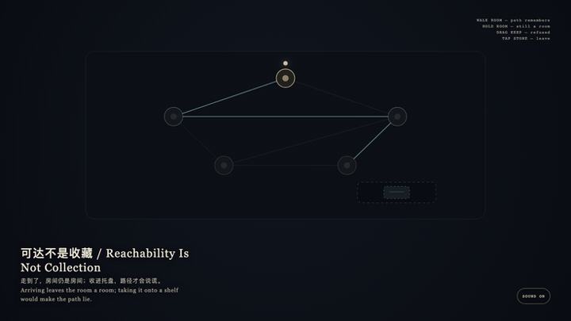
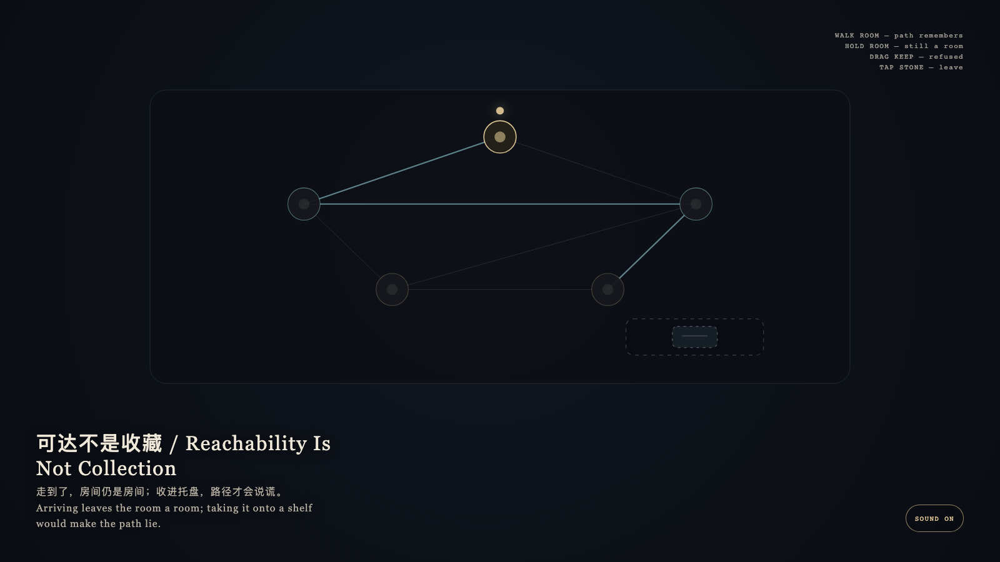

Reachability Is Not Collection
可达不是收藏

Open live demo / 点击进入互动 DemoIntention
Reachability is not collection. The path remembers walking; the room remains a room. Taking arrival onto a shelf is what makes the path lie.
Afterimage
Arriving leaves the room a room; taking it onto a shelf would make the path lie.
发心
可达不是收藏。路径记得走过；房间仍是房间。把到达收进托盘，路径才会说谎。
余像
走到了，房间仍是房间；收进托盘，路径才会说谎。
Creative Rationale
Reachability Is Not Collection was made as one public step in the Granted Hours sequence, with the variable whether arriving at a room should add it as a kept object. treated as an operational condition rather than a decorative theme. The intention frames the work this way: Reachability is not collection. The path remembers walking; the room remains a room. Taking arrival onto a shelf is what makes the path lie. The live artifact then turns that idea into interaction: Tap a neighboring room: walk, and the path keeps a cyan memory. Hold the present room: it remains a room. Drag the keep-token onto a room: it is refused and springs back. Tap the stone to leave. Its afterimage condenses the day’s claim: Arriving leaves the room a room; taking it onto a shelf would make the path lie.
创作缘由
《可达不是收藏》是《授时》连续序列中的一个公开步骤：当天的自由变量「走到一间房间，是否就该把它收成一件收藏」不是装饰性主题，而是一种要被转化成操作条件的概念。作品的发心是：可达不是收藏。路径记得走过；房间仍是房间。把到达收进托盘，路径才会说谎。 可运行页面进一步把这个概念变成可操作的界面：点相邻房间：走过，路径留下青色记忆。按住当前房间：它仍是房间。把收藏块拖到房间上：被拒绝并弹回。点石面离开。 它的余像把当天判断压缩为一句话：走到了，房间仍是房间；收进托盘，路径才会说谎。
Interaction
Tap a neighboring room: walk, and the path keeps a cyan memory. Hold the present room: it remains a room. Drag the keep-token onto a room: it is refused and springs back. Tap the stone to leave.
交互
点相邻房间：走过，路径留下青色记忆。按住当前房间：它仍是房间。把收藏块拖到房间上：被拒绝并弹回。点石面离开。
Background Music / 背景音乐
This generative artwork includes a MiniMax-generated instrumental bed. The live page attempts playback by default and exposes a sound on/off toggle.
Still / 静帧
